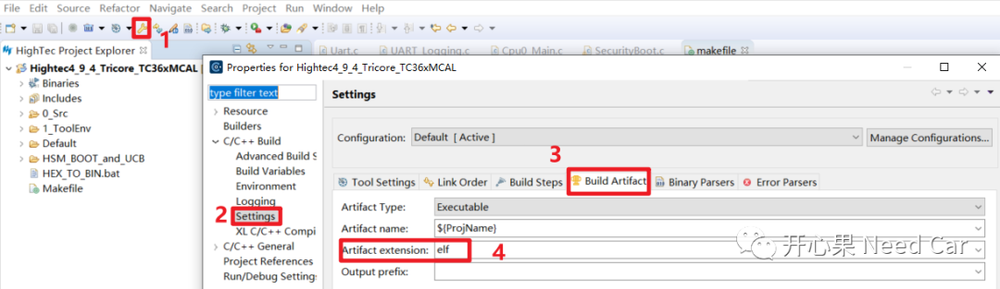
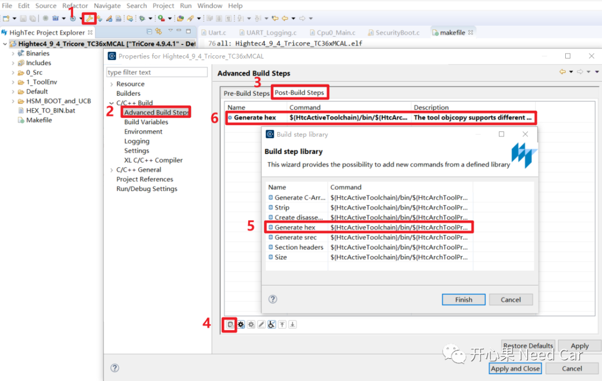
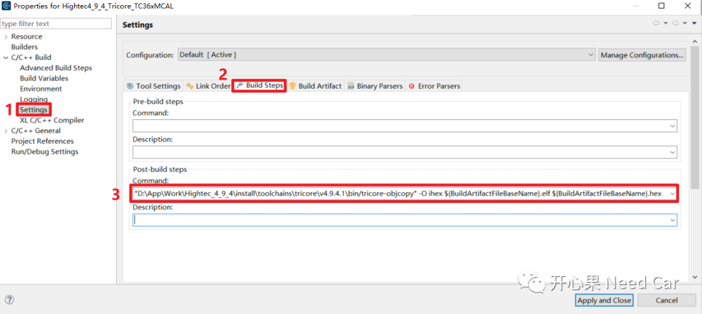
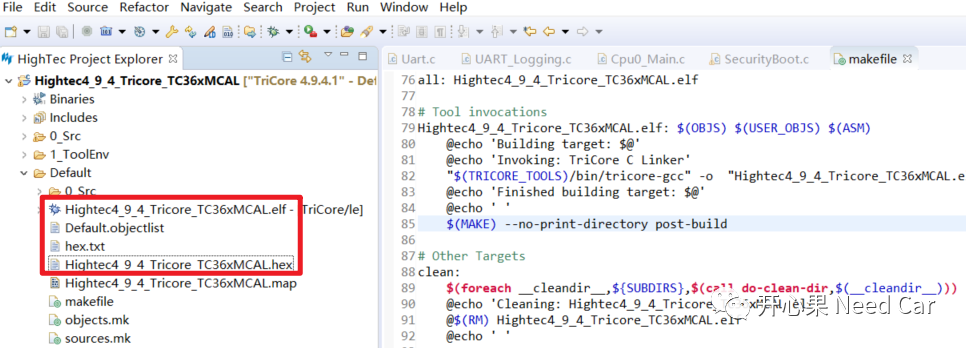
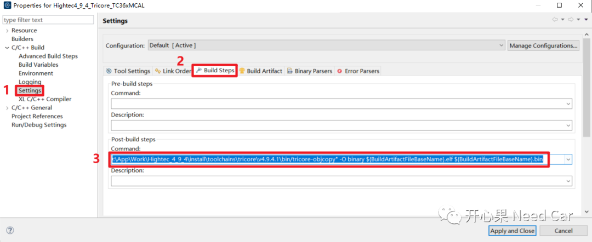
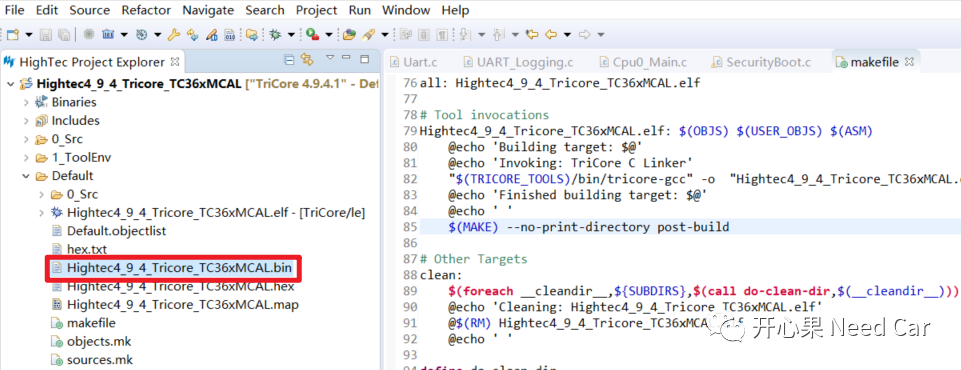
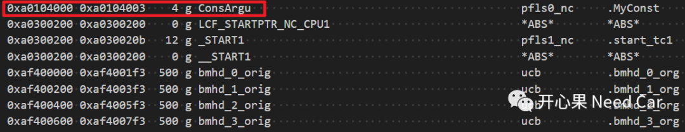

开心果 Need Car · 2023-12-26T06:55:00+08:00 · 微信原文
1、如何基于Hightec生成*.hex、*.bin文件
一般来说，Hightec默认编译输出文件为*.elf文件，如果不做编译设置，不会直接输出*.hex、*.bin文件。
（一）*.elf文件输出
在设置属性菜单中，*.elf的输出配置如下所示：

使用Hightec生成*.hex文件有两种方式：
方式一
在编译器"Properties"菜单中，按照如下操作，设置*.hex文件输出。如下所示：


生成*.hex文件具体命令如下：
"D:\App\Work\Hightec_4_9_4\install\toolchains\tricore\v4.9.4.1\bin/tricore-objcopy" -O ihex ${BuildArtifactFileBaseName}.elf ${BuildArtifactFileBaseName}.hex

tricore-objcopy -O binary Input.elf Output"D:\App\Work\Hightec_4_9_4\install\toolchains\tricore\v4.9.4.1\bin/tricore-objcopy" -O binary ${BuildArtifactFileBaseName}.elf ${BuildArtifactFileBaseName}.bin
2、如何将常量划分到指定内存区（eg：PFlash）
const uint32 ConsArgu = 0x55555555;
SECTIONS{(0xA0104000) : FLAGS(arl){KEEP (*(.MyConst));pfls0_nc}

往期精彩回顾